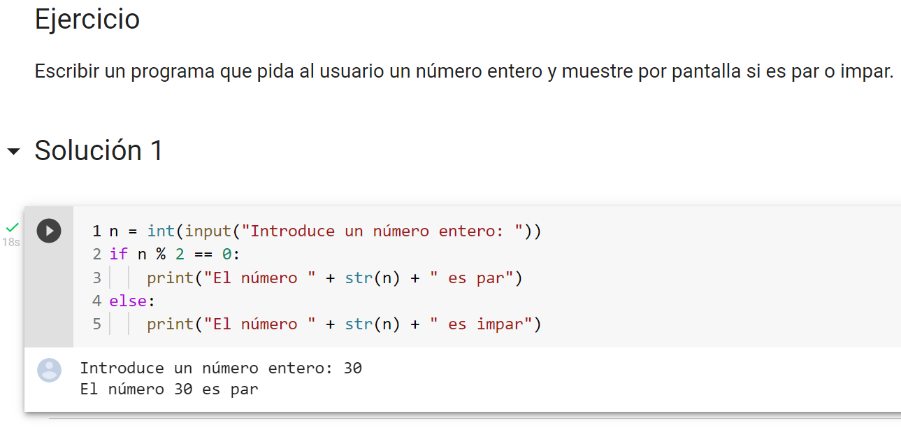

Símbolos
Operadores aritméticos
Los símbolos de Phyton son los operadores, uno de ellos son los operadores aritméticos. Estos permiten realizar las diferentes operaciones aritméticas del álgebra: suma, resta, producto, división, … Estos operadores Python son de los más utilizados. El listado completo es el siguiente:
- Opetador: +Descripción: Suma dos operandos.
- Opetador: -Descripción: Resta al operando de la izquierda el valor del operando de la derecha. Utilizado sobre un único operando, le cambia el signo.
- Opetador: *Descripción: Producto/Multiplicación de dos operandos.
- Opetador: /Descripción: Divide el operando de la izquierda por el de la derecha (el resultado siempre es un float).
- Opetador: %Descripción: Operador módulo. Obtiene el resto de dividir el operando de la izquierda por el de la derecha.
- Opetador: //Descripción: Obtiene el cociente entero de dividir el operando de la izquierda por el de la derecha.
- Opetador: **Descripción: Potencia. El resultado es el operando de la izquierda elevado a la potencia del operando de la derecha.
Operadores de comparación
Los operadores de comparación se utilizan, como su nombre indica, para comparar dos o más valores. El resultado de estos operadores siempre es True o False.
- Operador: >
Descripción: Mayor que. True si el operando de la izquierda es estrictamente mayor que el de la derecha; False en caso contrario. - Operador: >=
Descripción: Mayor o igual que. True si el operando de la izquierda es mayor o igual que el de la derecha; False en caso contrario. - Operador:
<
Descripción: Menor que. True si el operando de la izquierda es estrictamente menor que el de la derecha; False en caso contrario. - Operador:
<=
Descripción: Menor o igual que. True si el operando de la izquierda es menor o igual que el de la derecha; False en caso contrario. - Operador: ==
Descripción: Igual. True si el operando de la izquierda es igual que el de la derecha; False en caso contrario. - Operador: !=
Descripción: Distinto. True si los operandos son distintos; False en caso contrario.
Los objetos de diferentes tipos, excepto los tipos numéricos, nunca se comparan igual. El operador == siempre está definido, pero para algunos tipos de objetos (por ejemplo, objetos de clase) es equivalente a is.
Sintaxis
A continuación, se explicará la parte básica de la sintaxis del lenguaje de programación Phyton.
Comentarios
Los comentarios son bloques de texto usados para comentar el código. Es decir, para ofrecer a otros programadores o a nuestro yo futuro información relevante acerca del código que está escrito. A efectos prácticos, para Python es como si no existieran, ya que no son código propiamente dicho, solo anotaciones.
Los comentarios se inician con # y todo lo que vaya después en la misma línea será considerado un comentario.
# Esto es un comentario
En Python los bloques de código se representan con identación, y aunque hay un poco de debate con respecto a usar tabulador o espacios, la norma general es usar cuatro espacios.
En el siguiente código tenemos un condicional if. Justo después tenemos un print() identado con cuatro espacios. Por lo tanto, todo lo que tenga esa identación pertenecerá al bloque del if.
if True:
ㅤㅤㅤprint("True")
Por otro lado, a diferencia de en otros lenguajes de programación, no es necesario utilizar ';' para terminar cada línea.
# Otros lenguajes como C
# requieren de ; al final de cada línea
x = 10;
Sin embargo en Python no es necesario, basta con un salto de línea.
x = 5
y = 10
Pero se puede usar el punto y coma ; para tener dos sentencias en la misma línea.
x = 5; y = 10
Múltiples líneas
En algunas situaciones se puede dar el caso de que queramos tener una sola instrucción en varias línea de código. Uno de los motivos principales podría ser que fuera demasiado larga, y de hecho en la especificación PEP8 se recomienda que las líneas no excedan los 79 caracteres.
Haciendo uso de \ se puede romper el código en varias líneas, lo que en determinados casos hace que el código sea mucho más legible.
x = 1 + 2 + 3 + 4 +\
ㅤㅤ5 + 6 + 7 + 8
Si por lo contrario estamos dentro de un bloque rodeado con paréntesis (), bastaría con saltar a la siguiente línea.
x = (1 + 2 + 3 + 4 +
ㅤㅤㅤ5 + 6 + 7 + 8)
Se puede hacer lo mismo para llamadas a funciones
def funcion(a, b, c):
ㅤㅤreturn a+b+c
d = funcion(10,
23,
3)
Creando variables
Anteriormente ya hemos visto como crear una variable y asignarle un valor con el uso de =. Existen también otras formas de hacerlo de una manera un poco más sofisticada.
Podemos por ejemplo asignar el mismo valor a diferentes variables con el siguiente código.
x = y = z = 10
O también podemos asignar varios valores separados por coma.
x, y = 4, 2
x, y, z = 1, 2, 3
Nombrando variables
Puedes nombrar a tus variables como quieras, pero es importante saber que las mayúsculas y minúsculas son importantes. Las variables x y X son distintas.
Por otro lado existen ciertas normas a la hora de nombrar variables:
- El nombre no puede empezar por un número
- No se permite el uso de guiones '-'
- Tampoco se permite el uso de espacios.
Se muestran unos ejemplos de nombres de variables válidos y no válidos.
# Válido
_variable = 10
vari_able = 20
variable10 = 30
variable = 60
variaBle = 10
# No válido
2variable = 10
var-iable = 10
var iable = 10
Una última condición para nombrar a una variable en Python, es no usar nombres reservados para Python. Las palabras reservadas son utilizadas por Python internamente, por lo que no podemos usarlas para nuestras variables o funciones.
import keyword
print(keyword.kwlist)
# ['False', 'None', 'True', 'and', 'as', 'assert',
# 'async', 'await', 'break', 'class', 'continue',
# 'def', 'del', 'elif', 'else', 'except', 'finally',
# 'for', 'from', 'global', 'if', 'import', 'in', 'is',
# 'lambda', 'nonlocal', 'not', 'or', 'pass', 'raise',
# 'return', 'try', 'while', 'with', 'yield']
De hecho con el siguiente comando puedes ver todas las palabras clave que no puedes usar.
import keyword
print(keyword.kwlist)
Uso de paréntesis
Python soporta todos los operadores matemáticos más comunes, conocidos como operadores aritméticos. Por lo tanto podemos realizar sumas, restas, multiplicaciones, exponentes (usando '**') y otros que no vamos a explicar por ahora. En el siguiente ejemplo realizamos varias operaciones en la misma línea, y almacenamos su resultado en 'y'.
x = 10
y = x*3-3**10-2+3
Pero el comportamiento del código anterior y el siguiente es distinto, ya que el uso de paréntesis () da prioridad a unas operaciones sobre otras.
x = 10
y = (x*3-3)**(10-2)+3
El uso de paréntesis no solo se aplica a los operadores aritméticos, sino que también pueden ser aplicados a otros operadores como los relacionales o de membresía que vemos en otros posts.
Variables y alcance
Un concepto muy importante cuando definimos una variable, es saber el alcance o scope que tiene. En el siguiente ejemplo la variable con valor 10 tiene un alcance global y la que tiene el valor 5 dentro de la función, tiene un alcance local. Esto significa que cuando hacemos 'print(x)', estamos accediendo a la variable global 'x' y no a la 'x' definida dentro de la función.
x = 10
def funcion():
ㅤㅤx = 5
funcion()
print(x)
Uso de la función print()
Por último, en cualquier lenguaje de programación es importante saber lo que va pasando a medida que se ejecutan las diferentes instrucciones. Por ello, es interesante hacer uso de print() en diferentes secciones del código, ya que nos permiten ver el valor de las variables y diferente información útil.
'print()' se usa para mostrar por pantalla el texto que queramos.
print("Esto es el contenido a imprimir")
También es posible imprimir el contenido de una variable.
x = 10
print(x)
Y separando por comas ',' los valores, es posible imprimir el texto y el contenido de variables.
x = 10
y = 20
print("Los valores x, y son:", x, y)
# Salida: Los valores x, y son: 10 20
Estos fueron los conceptos básicos de la sintaxis de Phyton para poder empezar y entender este famoso lenguaje de programación.
Esqueleto de los programas
La siguiente imagen presenta cómo es el tipo de estructura o esqueleto de un programa escrito en lenguaje Phyton.
Aplicación a descargar para editar y ejecutar
Una vez instalado Phyton, se debe instalar un IDE para trabajar y ejecutar los programas escritos en dicho lenguaje. En este caso, una opción sería usar Visual Studio Code (VS Code).

Paradigma
Python es un lenguaje multiparadigma, esto significa que combina propiedades de diferentes paradigmas de programación. Principalmente es un lenguaje orientado a objetos, todo en Python es un objeto, pero también incorpora aspectos de la programación imperativa, funcional, procedural y reflexiva.
Ejemplo
A continuación, se muestra un ejemplo básico de un programa escrito en el lenguaje Phyton.
